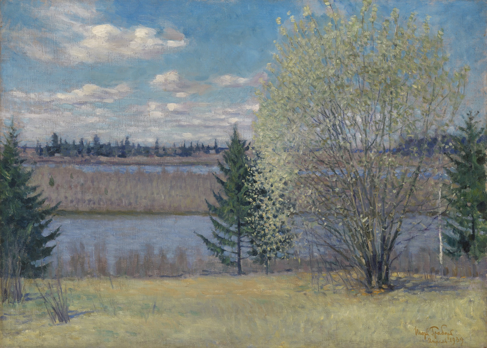

Игорь Эммануилович Грабарь
Весенний пейзаж. Апрель, 1939

Холст масло 66 x 91 см
🏛 Частная коллекция
Это одно из его многих произведений в стиле импрессионизма, который характеризуется светлой цветовой гаммой, мягкими переходами тонов и свободным мазком. На картине изображён весенний пейзаж, когда снег растаял и появляются первые зелёные листья. Художник использовал насыщенные цвета, чтобы передать свет и воздух весны, атмосферу свежести, радости и пробуждения природы. Картина демонстрирует мастерство художника в передаче световоздушной среды и оттенков. Мастер использовал тонкие слои краски и мелкие мазки, чтобы создать ощущение прозрачности и легкости. Картина также отражает настроение художника, который испытывал радость от жизни и любви к природе.